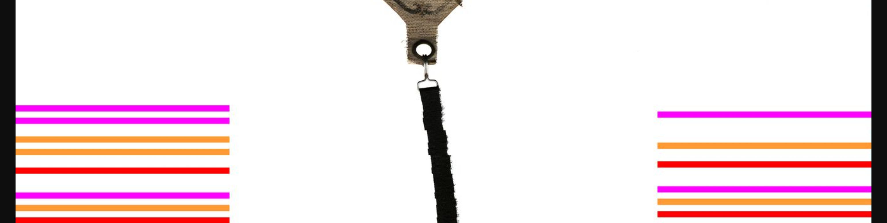

Pre-acceptance Test Roll Scans
This page links to sample scans of various roll types from the Stanford
Library piano-roll collections, mostly from the 8000-roll
Condon collection.
Click on roll thumbnail images in
the list below to view more information about each roll as well as links
to the original scans and analyses of the scans. Note that the
original full-color uncompressed TIFFs are 1–6 GB.
Rolls are grouped by format. Click on a format in the list below to
move to the rolls for that format.
[
Ampico |
Duo-Art |
Red |
Green |
Licensee |
Organ |
Metrostyle |
QRS |
Other |
Calibration
]
To see detailed information about a roll, click on its icon in the list. Note that
the "Automatic analysis of scan" link at the bottom of most
roll entries gives a detailed, automatically generated
analysis of the scan.
Here is a spreadsheet summary of the analysis:
Frame duplications
16 of the roll scans contain frame-duplication errors caused by an earlier
version of the scanning software (and camera driver), where pieces of the images
are duplicated and over-write frames missing or dropped when recording
the images. Consecutive frame-duplication errors are marked in the reduced JPEG images,
but not in the original TIFF. The marks consist of a solid color covering
1/4 of the problemmatic frame. For each adjacent frame, the duplication marker
shifts to the other side of the image. Here is an example from the
Pennino roll where there are 10 successive duplicate frames
(representing 1 physical inch on the rolls):

Most commonly there will be a burst of shorter dupliciation errors at the
start of a scan, such as this example from the same roll:

Three colors are cycled through to mark the frame duplications to separate
separate duplcation of a different frame, so the above image contains
six separate duplication events, each two to three frames in length.
Scans from December 2017 and later do not (should not) have duplication errors
since the scanning software will abort scanning if any are detected.
Ampico Rolls
Ampico rolls
were produced starting in 1913 and are the other most common American roll type.
Click on the roll thumbnails below to view more information about each roll.
Duo-Art Rolls
Duo-Art rolls were produced
by the Aeolean Company, which was one of the
two dominant player-piano companies in the United States.
Click on the roll thumbnails below to view more information about each roll.
Green Welte Rolls
"Green roll" are usually green-hue Welte-Mignon rolls produced from
1922 to 1932 in Freiburg, Germany by Welte & Sons. They have 98
rows of holes spaced 9 per inch, and a width of 11.25 inches.
Click on the roll thumbnails below to view more information about each roll.
Welte-Mignon Licensee Rolls
Licensee rolls are mostly Welte rolls for the American market.
Click on the roll thumbnails below to view more information about each roll.
Red Welte Rolls
"Red rolls" are usually red-colored Welte-Mignon rolls produced by
Welte
& Sons. They invented paper
rolls for playing organs in the 1880's, and they were the first
company to record live piano performances, starting in 1904 on these
red rolls. Red rolls were produced in Germany from 1905 to 1932,
and in Poughkeepsie, New York from 1913 to 1920. New York rolls
sometimes have a cloth leader. They have 100 rows of holes at 8
holes per inch, with the width of the roll being about 12.9 inches.
Click on the roll thumbnails below to view more information about
each roll.
Metrostyle Rolls
These are non-reproducing rolls that have tempo and dynamics curves printed
onto the rolls.
Click on the roll thumbnails below to view more information about each roll.
Organ Rolls
Duo-Art 176-note organ rolls (two offset tracker bars).
Stanford Libraries has a collection of 2000 Duo-Art organ rolls.
Click on the roll thumbnails below to view more information about each roll.
QRS Rolls
Rolls from the QRS company.
Click on the roll thumbnails below to view more information about each roll.
Non-reproducing Rolls
This are rolls which are not recording a live pianist.
Click on the roll thumbnails below to view more information about each roll.
Calibration Roll
This section contains scans of a roll used to calibrate the
horizontal and vertical DPI at the lower and upper camera setting.
The lengthwise DPI was measured to be 300.24±0.21 for the lower camera
setting and 300.32±0.19 in the upper camera setting. The camera position
should not affect the lengthwise DPI, and it doesn't.
The width DPI was measured to be 301.39 pixels/inch for the lower camera
setting and 251.48 pixels/inch for the upper camera setting.
The calcuations for these values are on
this spreadsheet.
{% include_relative templates.html %}
{% include_relative style.html %}